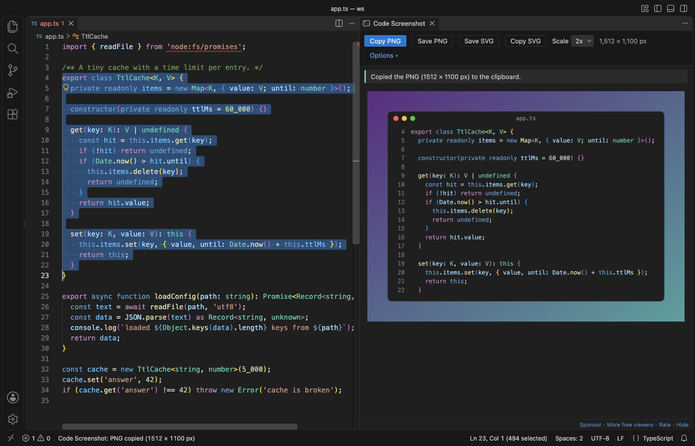

Open files in VS Code and Cursor / Code and APIs
Take a screenshot of code in VS Code
Install the free Code Screenshot & Code Snapshot by Zovo, select the lines and press Shift+Alt+C (Cmd+Alt+C on macOS). A PNG of the code goes straight to your clipboard, drawn with your editor theme, font, ligatures and bracket colors. Paste it into a chat, an issue or a slide. A panel beside the editor shows what was copied and has options for line numbers, frames and backgrounds.
Free, MIT license. Extension ID zovo.zovo-code-screenshot, version 0.1.0. Needs VS Code 1.90.0 or newer.

Steps in VS Code
- Install Code Screenshot from the Marketplace, or press Ctrl+P (Cmd+P on macOS) and run
ext install zovo.zovo-code-screenshot. - Select the lines you want. Partial lines are fine, because whole lines are taken.
- Press Shift+Alt+C (Cmd+Alt+C on macOS), or right-click and pick Copy as Image (PNG).
- Paste the picture where you need it.
- To change the look, open Options in the panel: line numbers, frame, title, background, padding, shadow and wrap. Your choices are kept for the next picture.
Steps in Cursor, Windsurf or VSCodium
- Open the Extensions view with Ctrl+Shift+X (Cmd+Shift+X on macOS).
- Search for
zovo.zovo-code-screenshotand click Install. Cursor, Windsurf and VSCodium install from Open VSX, where it is published aszovo/zovo-code-screenshot. - If your editor has no gallery, download the .vsix from the Open VSX page and run "Extensions: Install from VSIX...".
- Then use it the same way as in VS Code.
What Code Screenshot handles
- PNG at 1x to 4x, and SVG that keeps the code as text, so it stays sharp at any size.
- The real line numbers from the file, highlighted lines, and words marked by a double-click.
- Remove common indent, so a nested block starts at the left edge.
- Remote SSH, WSL and Dev Containers windows: the extension runs on your own computer, so the clipboard is yours.
- In the tests, a 10 MB one-line minified file was copied in 0.5 to 4.4 seconds and the editor stayed responsive.
What it does not do
- Colors come from TextMate grammars, so with themes that use semantic colors a few tokens can differ from the editor.
- On Linux, copying needs
xclip(X11) orwl-copy(Wayland). - A selection longer than 1,000 lines draws the first 1,000 and says how many were left out.
- An SVG names your font, so a computer without that font shows the next one in the list. The PNG has the font drawn in.
In JetBrains IDEs (IntelliJ IDEA, PyCharm, WebStorm, CLion and others)
- No Zovo plugin for JetBrains IDEs. Code Screenshot is for VS Code and editors built on it.
- Easy Code Screenshots. 102,826 downloads. Its description says it adds a Screenshot Selected Code action that copies an image of the selected text to the clipboard.
Other options
- CodeSnap (
adpyke.codesnap, 4 million installs, on Open VSX). The most installed one, with 4.64 stars from 75 ratings. You click a button in its panel to copy or save the picture. - Code Snapshot (
robertz.code-snapshot, 280,278 installs, not on Open VSX). Its own description: "Create your custom code snippet". Not on Open VSX. - ray.so and carbon.now.sh. Websites that make code pictures with many themes. Use them when you want a look that is not your editor theme and you are fine with pasting your code into a web page.
Install counts and Open VSX status were checked on 9 November 2026. Descriptions in quotes are the extensions' own.
Questions
Does the picture use my own theme and font?
Yes. The colors come from your color theme and token color settings, and the font is your editor font, size, line height and ligatures.
Is my code uploaded to a website?
No. The picture is drawn inside VS Code and copied with local system commands. The extension makes no network calls.
Can I get a picture that is sharp at any size?
Yes. Save SVG or Copy SVG keeps the code as text, so it scales without blur and the text can be selected.
More about Code Screenshot
Read the Code Screenshot page for every feature and setting, or the source code on GitHub.
Related guides
- Open a SARIF file in VS Code
- Preview a Swagger or OpenAPI file in VS Code
- Preview an HTML file with its CSS and images in VS Code
- Test a regex in VS Code
Support this work
If this extension saves you time, you can support the work on GitHub Sponsors. Monthly tiers start at $5, and one-time tiers start at $15. Sponsorship is optional, and the tool works the same without it.